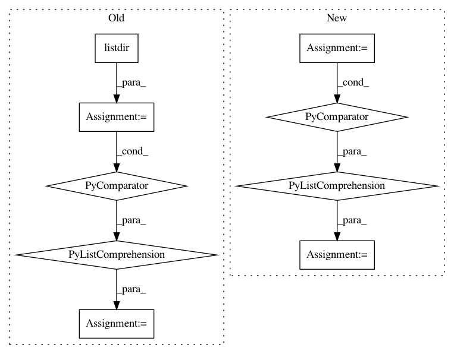

2c34a47f683dedb310f1c92be66870163cf80302,deepplantphenomics/heatmap_object_counting_model.py,HeatmapObjectCountingModel,load_heatmap_dataset_with_csv_from_directory,#HeatmapObjectCountingModel#Any#Any#,135
Before Change
heatmaps = np.stack(heatmaps)
image_files = sorted([os.path.join(dirname, filename) for filename in os.listdir(dirname)
if os.path.isfile(os.path.join(dirname, filename)) & filename.endswith(".png")])
self._total_raw_samples = len(image_files)
self._log("Total raw examples is %d" % self._total_raw_samples)
self._raw_image_files = image_files
After Change
filename = os.path.join(dirname, label_file)
labels, ids = loaders.read_csv_multi_labels_and_ids(filename, 0)
labels = [list(map(int, x)) for x in labels]
if self._with_patching:
self._raw_image_files, labels = self.__autopatch_heatmap_dataset(labels)
// The labels are [x1,y1,x2,y2,...] points, which we need to turn into (x,y) tuples and use to generate the
// ground truth heatmap
heatmaps = []
In pattern: SUPERPATTERN
Frequency: 3
Non-data size: 9
Instances
Project Name: p2irc/deepplantphenomics
Commit Name: 2c34a47f683dedb310f1c92be66870163cf80302
Time: 2019-10-10
Author: dbl599@mail.usask.ca
File Name: deepplantphenomics/heatmap_object_counting_model.py
Class Name: HeatmapObjectCountingModel
Method Name: load_heatmap_dataset_with_csv_from_directory
Project Name: pytorch/benchmark
Commit Name: fc2cbd6638ec1f132d0d33924d7b9d9a94b51979
Time: 2021-02-12
Author: xzhao9@fb.com
File Name: torchbenchmark/util/machine_config.py
Class Name:
Method Name: set_pstate_frequency
Project Name: pytorch/benchmark
Commit Name: fc2cbd6638ec1f132d0d33924d7b9d9a94b51979
Time: 2021-02-12
Author: xzhao9@fb.com
File Name: torchbenchmark/util/machine_config.py
Class Name:
Method Name: get_pstate_frequency